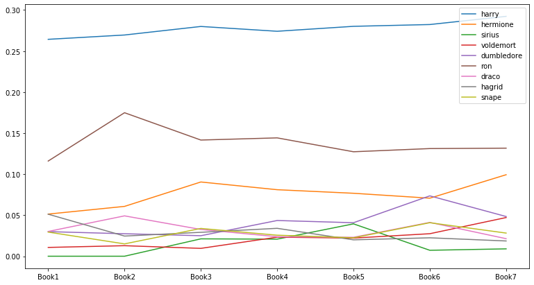

Social Network Analysis
Table of contents
*Social Network Analysis: 사람들로 이루어진 네트워크, 즉 사람들 간의 관계를 분석.
Harry Potter Network Analysis
: 예시로, 소설 < Harry Potter > 시리즈 속 인물들을 바탕으로 Social Network를 구현해 봄.
(→ 실제 사람들 사이의 관계에도 유사한 분석을 적용 가능)
Network 데이터 준비
- bookwarm library를 사용: 책 text를 바탕으로 인물 간 관계 데이터를 구성.
- source, target, value(=weight) 3개의 칼럼으로 구성. (방향성은 없지만 편의상 source와 target으로 나눔)
- 우선은 1권 < Harry Potter and the Philosopher’s Stone > 데이터만 사용
import pandas as pd
# 미리 bookwarm library를 사용해서 구축해 놓은 인물 간 관계 데이터
book1 = pd.read_csv('harrypotter/network_HarryPotter1.csv', index_col=0)
book1.head()
| source | target | value | |
|---|---|---|---|
| 0 | vernon | petunia | 24 |
| 1 | vernon | dudley | 29 |
| 2 | vernon | harry | 75 |
| 3 | vernon | hagrid | 6 |
| 4 | vernon | marge | 21 |
인물 간 관계 Graph 생성
import networkx as nx
import matplotlib.pyplot as plt
# Create an empty graph object
G = nx.Graph()
# Iterate through the DataFrame & add edges
for _, edge in book1.iterrows():
G.add_edge(edge['source'], edge['target'], weight=edge['value'])
nx.draw_networkx(G)
plt.axis('off') # turn off axis
plt.show()

- ※ 이렇게 node가 너무 많은 경우 뭉친 부분이 잘 안 보인다
Circos Plot으로 시각화
- nxviz의 Circos Plot을 사용: node가 많아 graph가 뭉치는 현상을 해결
- +) 각 node의 Degree Centrality 계산, Centrality에 따라 색을 다르게 해서 그리기
- +) Centrality 값에 따라 node를 정렬해서 중요도 높은 node 순으로 판별 가능하게 하기
# degree centrality 계산
deg_cen = nx.degree_centrality(G)
# 각 node에 'centrality' attribute 넣어주기
for node in G.nodes():
G.nodes[node]['centrality'] = deg_cen[node]
# centrality 값의 크기를 색으로 구분해 circos plot 그리기
import nxviz as nv
c = nv.CircosPlot(G, node_labels=True,
node_label_layout="rotation", # node끼리 서로 가리지 않도록 label를 rotate
node_color='centrality', # centrality 값을 기반으로 색을 구분
node_order='centrality', # centrality 값 순서대로 정렬
figsize=(12,12))
c.draw()
가장 가까운 인물 10명 찾기
: 특정 node와 연결된 edge의 weight가 큰 인물 순서대로 정렬해 찾기
# 네트워크 G 안에서 특정 노드(name) 사이의 weight가 큰 neighbor 순서대로 10명 출력하는 함수
def find_ten_closest(G, name):
neighbors_list = list(G.neighbors(f"{name}"))
temp_dict = {}
for n in neighbors_list:
weight = G.edges[f"{name}", n]['weight']
temp_dict[n] = weight
sorted_list = sorted(temp_dict.items(), key=(lambda x:x[1]), reverse=True)
for n, w in sorted_list[0:10]: # 1~10위
print(f'{n}: {w}')
# harry와 가장 가까운 인물 top10과 weight 출력 - 1권 기준
find_ten_closest(G, 'harry')
ron: 367
hagrid: 183
hermione: 177
snape: 94
draco: 90
quirrell: 87
dudley: 84
dumbledore: 83
vernon: 75
neville: 66
인물의 중요도 변화 확인 (HP 1~7)
import pandas as pd
import networkx as nx
# 미리 bookwarm library를 사용해서 만들어 둔 인물 간 관계 데이터: 1권~7권
book1 = pd.read_csv('harrypotter/network_HarryPotter1.csv', index_col=0)
book2 = pd.read_csv('harrypotter/network_HarryPotter2.csv', index_col=0)
book3 = pd.read_csv('harrypotter/network_HarryPotter3.csv', index_col=0)
book4 = pd.read_csv('harrypotter/network_HarryPotter4.csv', index_col=0)
book5 = pd.read_csv('harrypotter/network_HarryPotter5.csv', index_col=0)
book6 = pd.read_csv('harrypotter/network_HarryPotter6.csv', index_col=0)
book7 = pd.read_csv('harrypotter/network_HarryPotter7.csv', index_col=0)
# 각 book으로부터 네트워크를 만들어 G_books list에 append
books = [book1, book2, book3, book4, book5, book6, book7]
G_books = []
for book in books:
G_book = nx.Graph()
for _, edge in book.iterrows():
G_book.add_edge(edge['source'], edge['target'], weight=edge['value'])
G_books.append(G_book)
인물의 중요도 변화: Degree Centrality
# Creating a list of degree centrality of all the books
evol = [nx.degree_centrality(G) for G in G_books]
# Creating a DataFrame from the list of degree centralities in all the books
index = ['Book1', 'Book2', 'Book3', 'Book4', 'Book5', 'Book6', 'Book7']
degree_evol_df = pd.DataFrame.from_records(evol, index=index).fillna(0) # 모든 책에 모든 캐릭터가 있는 게 아니므로, N/A는 0으로 채워줌
# 각 책의 중요도 top 5 인물 선택
set_of_char = set()
for i in index: # 1~7권
set_of_char |= set(list(degree_evol_df.T[i].sort_values(ascending=False)[0:5].index))
# |=는 왼쪽과 오른쪽의 합집합을 왼쪽에 assign해주는 역할
list_of_char = list(set_of_char)
# Evolution of Top Characters 시각화
degree_evol_df[list_of_char].plot(figsize=(13, 7));
인물의 중요도 변화: Betweenness Centrality
# Creating a list of betweenness centrality of all the books
evol = [nx.betweenness_centrality(G, weight='weight') for G in G_books]
# Making a DataFrame from the list
index = ['Book1', 'Book2', 'Book3', 'Book4', 'Book5', 'Book6', 'Book7']
betweenness_evol_df = pd.DataFrame.from_records(evol, index=index).fillna(0)
# 각 책의 중요도 top 5 인물 선택
set_of_char = set()
for i in index: # 1~7권
set_of_char |= set(list(betweenness_evol_df.T[i].sort_values(ascending=False)[0:5].index))
list_of_char = list(set_of_char)
# Evolution of Top Characters 시각화
betweenness_evol_df[list_of_char].plot(figsize=(13, 7));
인물의 중요도 변화: Eigenvector Centrality
# Creating a list of eigenvector centrality of all the books
evol = [nx.eigenvector_centrality(G, weight='weight') for G in G_books]
# Making a DataFrame from the list
index = ['Book1', 'Book2', 'Book3', 'Book4', 'Book5', 'Book6', 'Book7']
eigenvector_evol_df = pd.DataFrame.from_records(evol, index=index).fillna(0)
# 각 책의 중요도 top 5 인물 선택
set_of_char = set()
for i in index: # 1~7권
set_of_char |= set(list(eigenvector_evol_df.T[i].sort_values(ascending=False)[0:5].index))
list_of_char = list(set_of_char)
# Evolution of Top Characters 시각화
eigenvector_evol_df[list_of_char].plot(figsize=(13, 7));
인물의 중요도 변화: PageRank
- PageRank는 Eigenvector Centrality를 기반으로 node의 ranking을 매기는 알고리즘
- Google에서 web page 간의 link 관계를 바탕으로 ranking을 매기는 방법으로 고안된 방식
- 원래는 directed graph를 위해 디자인된 알고리즘이지만 undirected graph에서도 활용 가능
# Creating a list of pagerank of all the characters in all the books
evol = [nx.pagerank(G) for G in G_books]
# Making a DataFrame from the list
index = ['Book1', 'Book2', 'Book3', 'Book4', 'Book5', 'Book6', 'Book7']
pagerank_evol_df = pd.DataFrame.from_records(evol, index=index).fillna(0)
# 각 책의 중요도 top 5 인물 선택
set_of_char = set()
for i in index: # 1~7권
set_of_char |= set(list(pagerank_evol_df.T[i].sort_values(ascending=False)[0:5].index))
list_of_char = list(set_of_char)
# Evolution of Top Characters 시각화
pagerank_evol_df[list_of_char].plot(figsize=(13, 7));

- Eigenvector Centrality로 계산했을 때와 매우 유사한 결과
Correlation between different measures
4개의 Centrality 계산 방식끼리 얼마나 유사한 결과를 내는지 비교
- Correlation 계산: 1권 기준
# List of 4 centrality scores of all the characters in book 1 measures = [nx.pagerank(G_books[0]), nx.eigenvector_centrality(G_books[0], weight='weight'), nx.betweenness_centrality(G_books[0], weight='weight'), nx.degree_centrality(G_books[0])] # DataFrame 만들어서 Correlation 계산 cor = pd.DataFrame.from_records(measures, index=['PageRank', 'Eigenvector', 'Betweenness', 'Degree']) cor.T.corr()PageRank Eigenvector Betweenness Degree PageRank 1 0.936511 0.932695 0.957365 Eigenvector 0.936511 1 0.880642 0.970408 Betweenness 0.932695 0.880642 1 0.926985 Degree 0.957365 0.970408 0.926985 1 - 1권에서는 4개의 인물 중요도 계산 방식이 모두 서로 유사한 결과를 냄
- Correlation 계산: 3권 기준
# Creating a list of all centrality of all the characters in book 3 measures = [nx.pagerank(G_books[2]), nx.eigenvector_centrality(G_books[2], weight='weight'), nx.betweenness_centrality(G_books[2], weight='weight'), nx.degree_centrality(G_books[2])] # DataFrame 만들어서 Correlation 계산 cor = pd.DataFrame.from_records(measures, index=['PageRank', 'Eigenvector', 'Betweenness', 'Degree']) cor.T.corr()PageRank Eigenvector Betweenness Degree PageRank 1 0.946001 0.508885 0.908312 Eigenvector 0.946001 1 0.561182 0.925465 Betweenness 0.508885 0.561182 1 0.705608 Degree 0.908312 0.925465 0.705608 1 - 3권에서는 인물 중요도 계산에서 유독 Betweenness Centrality가 다른 방법들과 차이를 보임
- PageRank와 Eigenvector Centrality 방식이 특히 유사한 결과를 냄